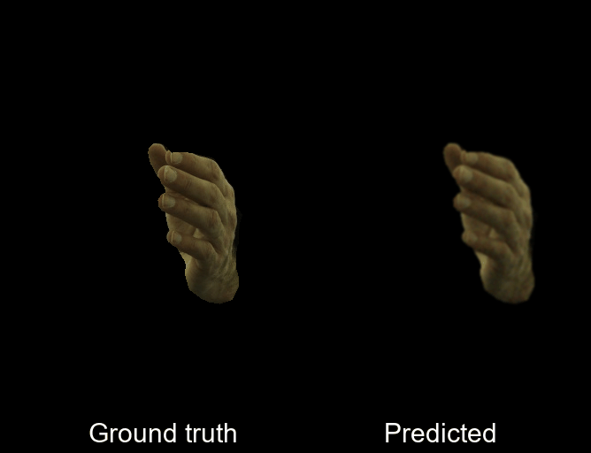
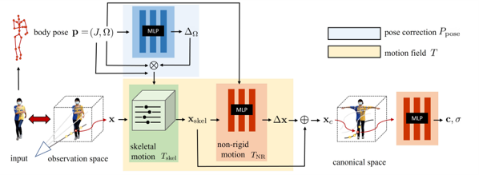
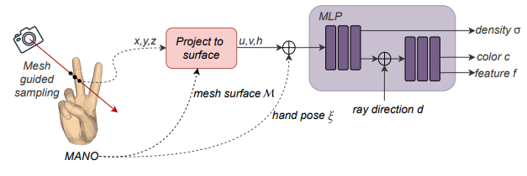
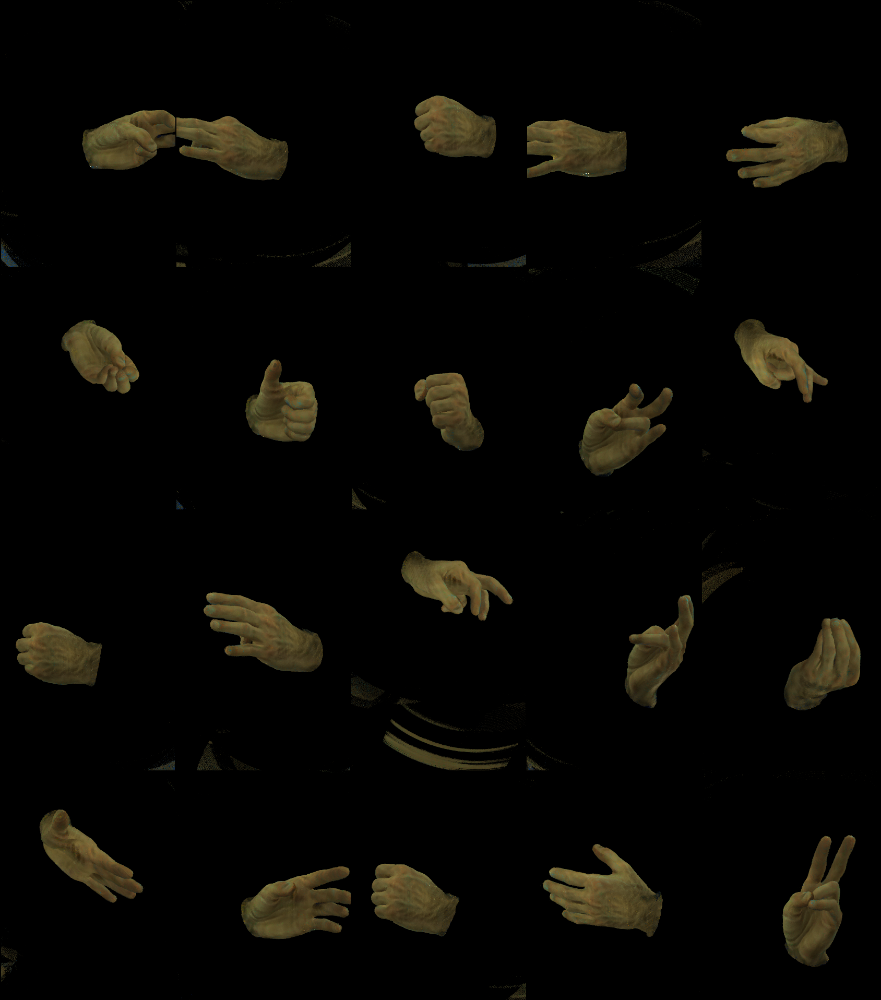

A NeRF-based 3D reconstruction of a human hand from monocular and multi-view sequences, based on Interhand2.6m dataset
|
 |
This work addresses the problem of reconstructing an animatable avatar of a human hand from a collection of images of a user performing a sequence of gestures. Our model can capture accurate hand shape and appearance and generalize to various hand subjects. For a 3D point, we can apply two types of warping: zero-pose canonical space and UV space. The warped coordinates are then passed to a NeRF which outputs the expected color and density. We demonstrate that our model can accurately reconstruct a dynamic hand from monocular or multi-view sequences, achieving high visual quality on the Interhand2.6m dataset.


 |
 |
Single view multi-pose sequence
